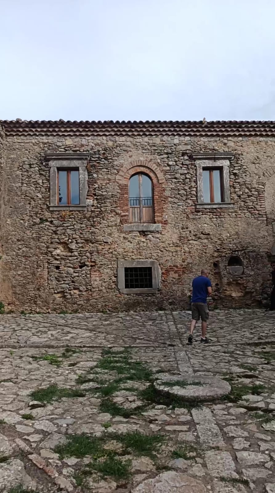
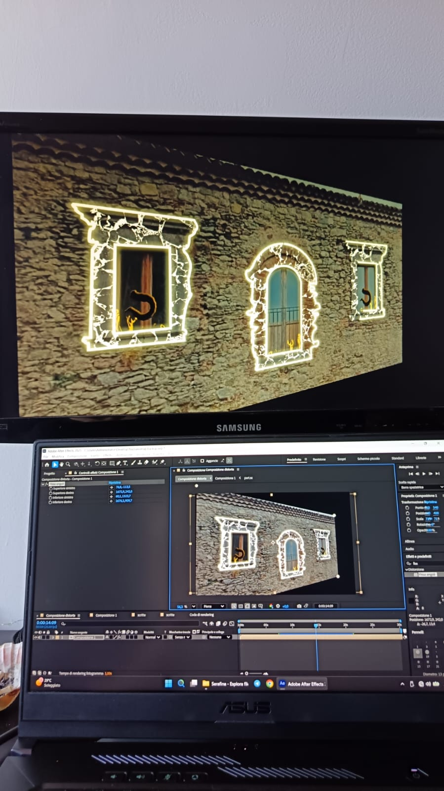

Projection mapping sulla facciata del Monastero di Fragalà a Frazzanò, per l'evento Serafina Nebrodi Experience. Idea, contenuti e mapping sono interamente miei: le tre finestre della facciata diventano superfici animate, con visual che cambiano a un ritmo proprio, pensato per funzionare a prescindere dalla musica suonata dal vivo sotto.
Workflow: in After Effects ho lavorato su una foto piatta della facciata, ricalcando con lo strumento penna le sagome delle cornici delle finestre. Da quelle forme, tramite maschere di livello, ho aggiunto e animato clip ed effetti (trim paths tra gli altri). Ogni finestra è una pre-comp: le tre pre-comp sono state portate in una nuova comp finale, dove le ho deformate una per una con il corner pin (pre-warping) per adattarle alla prospettiva. Proiettore DLP 1610HD posizionato a circa 7 metri, in diagonale rispetto alla facciata.
Buo ft Vella dal vivo, con i visual mappati sulla facciata
Reel Serafina: il mapping sulla facciata


Prima e dopo
Un minuto di animazione velocizzato, con la foto della facciata in trasparenza dietro
I keyframe del mapping sulle finestre
Tutti i livelli del progetto: pre-comp, maschere e comp finale
I livelli con l'effetto Saber sulle finestre
Test delle proiezioni sulla facciata, prima dell'evento